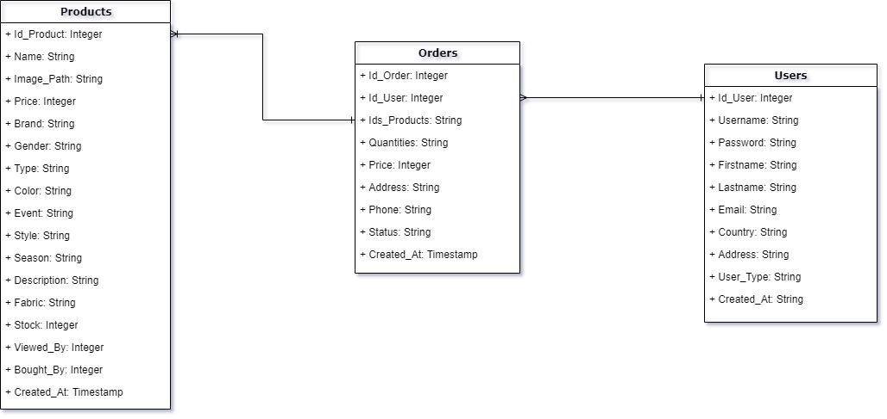
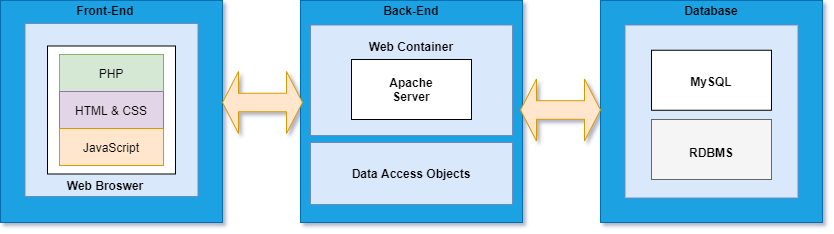

FooW project
Footwear Web Assistant report
- Authors
-
Matei Alexandru & Mihuleac Narcis-Petrisor
Cerintele Proiectului - Fashion E-Shop a.k.a. FES
Sa se realizeze o aplicatie Web care gestioneaza colectii de imbracaminte si proprietatile aferente: categorie, materiale, tipuri de croiala, pret, marime, imagini, destinatari (copii, tineri, adulti), context (garderoba casual, sport, pentru diverse
ocazii: bal mascat, aniversari,...), colectii deosebite si altele.
Sistemul va oferi suport pentru activitati de cumparare/licitare a acestor haine, inclusiv administrarea utilizatorilor.
Se vor genera statistici diverse ce pot fi exportate in formate deschise – minimal, CSV si PDF.
Se va realiza, de asemenea, un clasament al celor mai populare produse, disponibil si ca flux de date RSS.
Tehnologii Utilizate
Interfata Web a utilizatorului a fost realizata utilizand HTML, CSS si JavaScript.
Serverul Web a fost realizat cu ajutorul PHP.
Stocarea si managementul datelor au fost realizate utilizand MySQL.
Diagrame
Diagrama Bazei de Date

Arhitectura aplicației

Sistemul de Management al Codului Sursa
Pentru stocarea si managementul codului sursa am utilizat GitHub.
Roluri ale Utilizatorilor
Un Utilizator poate fi in cadrul aplicatiei Vizitator, Membru sau Administrator.
Un Vizitator poate accesa:
- Pagina de Inregistrare/Autentificare.
- Pagina de Shop, insa fara posibilitatea de a adauga produse in cos sau a plasa o comanda.
- Fluxurile de Date RSS.
Un Membru poate accessa:
- Toate paginile disponibile unui Vizitator.
- Cosul de produse si poate plasa comenzi.
- Pagina pentru editare a profilului.
- Pagina ce prezinta istoricul comenzilor efectuate.
- Optiunea de Logout.
Un Administrator poate accesa:
- Toate paginile disponibile unui Membru.
- Panoul pentru generare a statisticilor.
- Interfata de administrator prin care se pot efectua:
- Stergerea si modificarea datelor unui Utilizator.
- Adaugarea, stergerea si modificarea datelor unui Produs.
- Stergerea si modificarea statusului unei Comenzi.
Functionalitati
Shop
- Foloseste un singur view care centralizeaza in functie de filtre continutul dorit de catre user.
- Dupa cum s-a mentionat mai sus acesta pune la dispozitie un filter bar impreuna cu produsele disponibile intr-un continut responsive si paginat.
Products
- Interogheaza baza de date cu privire la un anumit produs si afiseaza intr-un mod elegant informatiile cheie.
- Ofera posibilitatea de adaugare a produsului intr-o anumita cantitate, atat timp cat acesta este disponibil, in cos.
Cart
- Foloseste sesiunea pentru a salva produsele salvate in cos de utilizator pe parcursul cumparaturilor.
- Interogheaza baza de date si face calculele necesare pentru a oferi clientului lista finala de cumparaturi cu posibilitatea de a modifica sau sterge anumite produse.
Place Order
- Interogheaza user-ul cu privire la datele necesare livrarii si plaseaza comanda in baza de date pentru a o pune in atentia administratorilor.
Admin Panel
- Ofera o interfata cu posibilitati de modificare a bazei de date.
- Necesara pentru a updatata starea comenzilor si a produselor aplicatiei.
Statisici
- Utilizeaza libraria FPDF pentru a genera statistici pe baza comenzilor si a userilor intr-un format pdf.
Etapele de Dezvoltare a Proiectului
Baza de Date - Creata de catre Mihuleac Narcis.
Index - Creat de catre Matei Alexandru si Mihuleac Narcis.
Register & Login - Creat de catre Matei Alexandru si updatat de catre Mihuleac Narcis.
Edit Profile - Creat de catre Mihuleac Narcis.
Shop - Creat de catre Matei Alexandru si updatat de catre Mihuleac Narcis.
Product - Creat de catre Mihuleac Narcis.
Cart - Creat de catre Matei Alexandru si updatat de catre Mihuleac Narcis.
Place Order & Show Orders - Creat de catre Mihuleac Narcis.
Admin Panel - Creat de catre Matei Alexandru si updatat de catre Mihuleac Narcis.
Paginare - Creat de catre Mihuleac Narcis.
Statistici Shop - Creat de catre Matei Alexandru.
Fluxuri RSS - Create de catre Matei Alexandru.
Resurse Externe Utilizate
- Stackoverflow
- W3School
- Documentatia Oficiala PHP
- MDN
- FPDF
- CSS Validator
- HTML Validator
- Schema